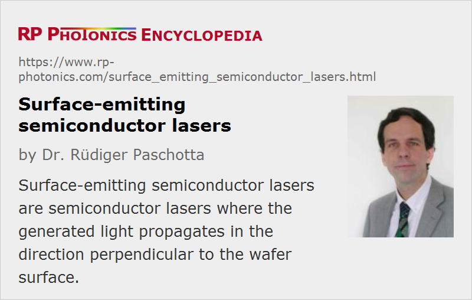

Surface-emitting Semiconductor Lasers
Acronym: VCSEL, VECSEL (see below for the distinction of those)
Definition: semiconductor lasers where the generated light propagates in the direction perpendicular to the wafer surface
More general term: semiconductor lasers
More specific terms: vertical cavity surface-emitting lasers, vertical external cavity surface-emitting lasers
German: oberflächenemittierende Laser
Categories: optoelectronics, lasers
How to cite the article; suggest additional literature
Author: Dr. Rüdiger Paschotta
Semiconductor lasers can be grouped into two classes:
- Edge-emitting lasers, where the laser light propagates parallel to the wafer surface of the semiconductor chip and is reflected or coupled out at a cleaved edge.
- Surface-emitting lasers, where the light propagates in the direction perpendicular to the semiconductor wafer surface.
Surface-emitting lasers are the newer type of semiconductor lasers. A major challenge is to reach the laser threshold, because the optical gain for the intracavity laser beam occurs only on a very small distance (in one or several quantum wells) and is therefore at most a few percent, often even below 1%. It is therefore necessary to realize a laser resonator with very low losses, i.e., Bragg mirrors with high reflectivity.
Surface-emitting semiconductor lasers are further subdivided into monolithic and external-cavity devices:
- Monolithic means that the laser resonator is realized in the form of two semiconductor Bragg mirrors with the quantum well section in between. Such a device is called VCSEL (vertical cavity surface-emitting laser) and is electrically pumped in most cases. Several milliwatts of output power can be obtained in a diffraction-limited output beam.
- External-cavity devices, called vertical external cavity surface-emitting lasers (VECSELs), have only a single Bragg mirror on the chip, and the resonator is completed with an external mirror. Such lasers allow much higher output powers in diffraction-limited beams, particularly when they are optically pumped.
An advantage particularly of VCSELs is that many lasers can be fabricated on a single chip. After epitaxial growth, the chip only has to be sliced, and the single lasers can be packaged without further processing optical interfaces.
The VCSEL concept also allows the fabrication of two-dimensional laser arrays for much higher total output powers.
Vertical emission of light can also be achieved with a kind of laser diode which is based on a waveguide along the chip surface (as in an edge-emitting laser), but emits in the vertical direction because the light is reflected upward with a 45° mirror (horizontal cavity surface-emitting laser, HCSEL). This approach makes it possible to combine some of the advantages of edge-emitting and surface-emitting lasers.
Suppliers
The RP Photonics Buyer's Guide contains 12 suppliers for surface-emitting semiconductor lasers. Among them:
Questions and Comments from Users
Here you can submit questions and comments. As far as they get accepted by the author, they will appear above this paragraph together with the author’s answer. The author will decide on acceptance based on certain criteria. Essentially, the issue must be of sufficiently broad interest.
Please do not enter personal data here; we would otherwise delete it soon. (See also our privacy declaration.) If you wish to receive personal feedback or consultancy from the author, please contact him e.g. via e-mail.
By submitting the information, you give your consent to the potential publication of your inputs on our website according to our rules. (If you later retract your consent, we will delete those inputs.) As your inputs are first reviewed by the author, they may be published with some delay.
Bibliography
| [1] | K. Iga et al., “Surface emitting semiconductor lasers”, IEEE J. Quantum Electron. 24 (9), 1845 (1988), doi:10.1109/3.7126 |
| [2] | M. Kuznetsov et al., “High-power (> 0.5-W CW) diode-pumped vertical-external-cavity surface-emitting semiconductor lasers with circular TEM00 beams”, IEEE Photon. Technol. Lett. 9 (8), 1063 (1997), doi:10.1109/68.605500 |
| [3] | K. Iga, “Surface-emitting laser – its birth and generation of new optoelectronics field”, J. Sel. Top. Quantum Electron. 6 (6), 1201 (2000), doi:10.1109/2944.902168 |
| [4] | S. Hoogland et al., “Passively mode-locked diode-pumped surface-emitting semiconductor laser”, IEEE J. Photon. Technol. Lett. 12 (9), 1135 (2000), doi:10.1109/68.874213 |
| [5] | A. C. Tropper et al., “Vertical-external-cavity semiconductor lasers”, J. Phys. D: Appl. Phys. 37, R75 (2004) (a good review), doi:10.1088/0022-3727/37/9/R01 |
| [6] | D. Lorenser et al., “Towards wafer-scale integration of high repetition rate passively mode-locked surface-emitting semiconductor lasers”, Appl. Phys. B 79, 927 (2004), doi:10.1007/s00340-004-1675-3 |
See also: semiconductor lasers, vertical cavity surface-emitting lasers, vertical external-cavity surface-emitting lasers, edge-emitting semiconductor lasers
and other articles in the categories optoelectronics, lasers
|  |
If you like this page, please share the link with your friends and colleagues, e.g. via social media:
These sharing buttons are implemented in a privacy-friendly way!